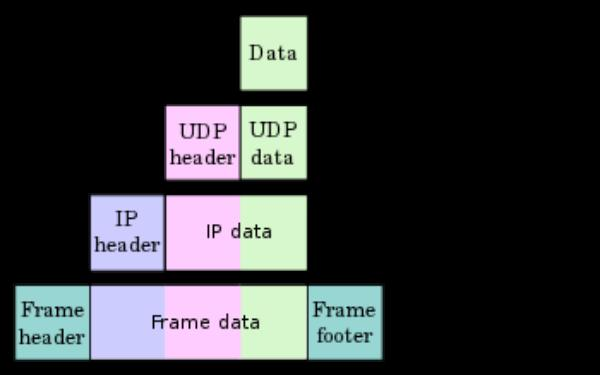

¿Qué pasa cuando nos conectamos a una web?
(versión SpeedRun)

WhoAmI?
- Name: Víctor
- Twitter: g0ldanel
- Profesión: ¿FullStack developer?
Un señor con un sentido del humor muy refinado
HTTP 101
HyperText Transfer Protocol
Es un protocolo que en sus inicios fue construido sobre TCP para servir contenidos (cada vez más) amigables y visuales, en vez de los paquetes de datos en texto plano que se venían dando.
Se compone de dos partes:
Request
GET / HTTP/1.1
Host: wordpress.org
User-Agent: curl
Accept: */*
Response
HTTP/1.1 200 OK
Cache-control: max-age: 604800
Content-type: text/html
Formato de una request
https:// wordpress.org :443 /themes/happy-wedding-day/ ?id=1234 #ornitorrinco- Protocolo: HTTP/S, FTP...
- Dominio/Hostname: El nombre de la máquina a la que se le hace el request/petición
- Puerto: ...de acceso
- Path/Resource: Recursos específico dentro del Host al que se quiere acceder
- Query: Parámetros de consulta adicionales
- Anchor/Fragmento: Parte específica del documento HTML a la que se hace referencia.
Headers
Tanto requests(cliente) como responses(servidor) tienen cabeceras(headers). Son información adicional para la otra parte(tipo de contenido, cookies, caches..).
Son completamente case insensitive(es lo mismo 'Content-Type' que 'CoNtEnT-tYPE').
Algunos ejemplos:
- Access-Control-Allow-Origin
- Allow
- Age
- Content-Encoding: gzip
- Content-Type: text/html; charset=UTF-8
- Expires
- Keep-Alive
Caching headers:
- If-None-Match <-> Etag
- Cache-Control
....¡y muchos más! ¡hazte con todos!
HTTP responses
Una respuesta típica de navegación tendrá:
- Headers
- Documento(body)
- Status code
HTTP status codes
Informational (10x)
- 100 Continue
- 101 Switching Protocol
- 102 Processing
Success (20x)
- 100 Continue
- 101 Switching Protocol
- 102 Processing
Redirect (30x)
- 300 Multiple Choice
- 301 Moved Permanently
- 302 Found
- 303 See Other
- 304 Not Modified
Client Error (40x)
- 400 Bad Request
- 401 Unathorized
- 403 Forbidden
- 404 Not Found
- 405 Method Not Allowed
- ...
Server Error (50x)
- 500 Internal Server Error
- 501 Not Implemented
- 502 Bad Gateway
- 503 Service Unavailable
- 504 Gateway Timeout
- 511 Network Authentication Required
HTTP 2
Se mantienen status codes, headers, etc.
Es la siguiente versi'on tras HTTP/1
Mismos Headers, multiplexados(comprimidos) por defecto
Se reutilizan las conexiones TCP
TLS por defecto(HTTPS!)
HTTP S
- TLS abre una conexión TCP con el servidor
- Servidor responde con certificado
- Cliente comprueba el certificado(parte pública) con una entidad certificadora(root certficate authorities)
- Checks? Good! Se comparten claves para codificar("encriptar") la conexión con AES y una clave compartida para la sesi'on
- Todo esto es el famoso y llamado TLS(HTTP over [S]SL/TL[S])
DNS
Domain Name System
Es un servicio de base de datos distribuida de las relaciones Nombre <-> Ip de los hosts de toda la Web. En sus inicios era una tabla centralizada.
- Es tambi'en responsable de informar sobre el servidor de correo de un host.
- Cualquiera puede montar su propio servidor, pero se desaconseja (DNS Attacks).
Resolutores
- Gestionan las peticiones de las aplicaciones.
- Resuelven en ambos sentidos
- Mantienen la cache local
- Dominio local?
- Cache?
- Petici'on servidores raiz DNS
- Peticion a los dns en respuesta de los servidores raiz
UDP 101
User Datagram Protocol
Es un servicio muy basico de envio de Datagramas para Aplicaciones.
Es muy rapido, principalmente porque no gestiona aperturas ni cierres de conexion, simplemente envia y recibe la respuesta(si la hubiera)
- DNS
- DB Query
- Videollamadas
TCP 101
Transmission Control Protocol
Es un servicio de intercambio de datagramas confiable y seguro.
- Establece y cierra conexiones
- Garantiza la entrega de los datagramas de forma ordenada y sin errores
- Control de flujo
- Empaqueta y fragmenta
- HTTP
- Youtube
IP 101
Internet Protocol
Se encarga de aceptar datos de TCP&UDP, encapsularlos y encaminarlos para tratar de entregarlos a destino.
Para ello, utiliza la m'ascara de subred y la tabla de enrutamientos...
...y buenas intenciones.
IP debe permitir:
- Generico. Integrarse entre diferementes fabricantes
- Escalable.
- Disponible
- Dar apoyo a niveles superiores
IP no garantiza la entrega(fin del tiempo de vida, fallo en el encaminamiento, errores en la transmision, o simplemente falta de espacio en el bufer.)
Fiabilidad: TCP
¿Qué pasa cuando nos conectamos a una web?
El Modelo por Capas TCP/IP
HTTP protocol (Implemented by the browser) queries the OS resolver for the IP associated to the hostname
Que es...
wordpress.org